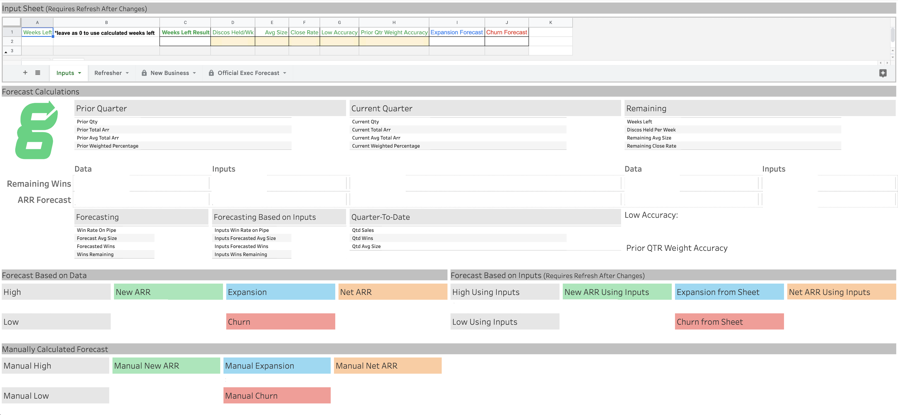

|  |
Sales Forecasting
For this project, I was tasked with automating a quarterly sales forecasting process made by the sales executive at the time.
I started by going through all the formulas used in the process and recreating them in Snowflake and dbt. Eventually, we decided it would be beneficial to play with some of the numbers to see how they affect the forecast, so I created the Google Sheet at the top of the dashboard to grab the data from and push down the dbt pipeline. I also made it a Tableau data source and integrated it to work with the formulas in Tableau itself. This way any changes made on the Sheet would show up immediately, rather than having to wait for the data to get pulled through dbt. This project was a great case of reaching as many parts of the process as possible, from creating data sources to creating the dashboard with an integrated Google Sheet. |